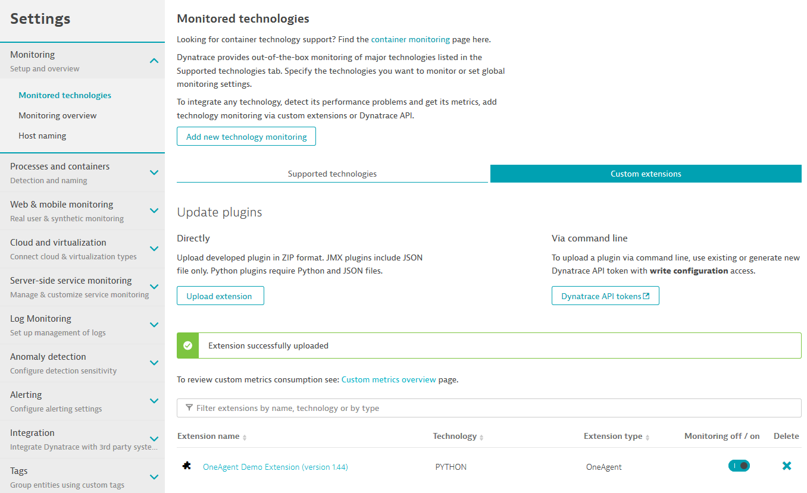
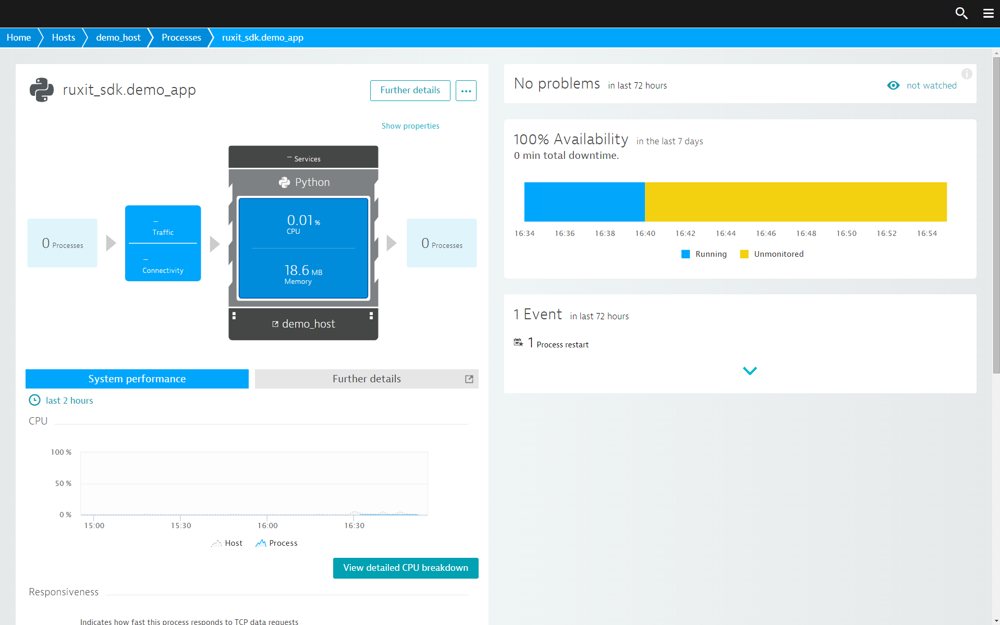
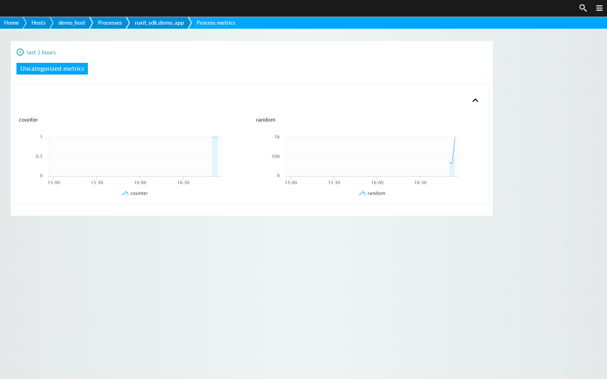

Write your first OneAgent plugin¶
Welcome to the OneAgent custom plugin documentation. These lessons will guide you step-by-step through the process of creating your first OneAgent plugin.
Set up your environment¶
To develop custom plugins for OneAgent, you first need to set up your environment.
Prerequisites¶
- OneAgent installed and running on your system
- Python 3.6
plugin-sdkpython package installed
Obtaining OneAgent Plugin SDK
Download the OneAgent Plugin SDK from the Dynatrace UI.
- Go to Settings > Monitoring > Monitored technologies.
- Click the Add new technology monitoring button.
- In the Monitor any technology section, click the Add OneAgent plugin button.
- You will see a high level overview of the steps required to develop your plugin, along with the SDK download link.
Installing OneAgent Plugin SDK
The OneAgent Plugin SDK is shipped as a ZIP archive that contains this documentation and a wheel package (WHL format).
Note
We recommend that you install the Plugin SDK using Python virtual environment. For guidance, see Virtual Environments and Packages in Python documentation.
You can install the SDK wheel package using pip3, for example:
pip3 install plugin_sdk-1.184.0.20191202.134853-py3-none-any.whl
If you need help installing Python packages, please see the Python Packaging User Guide
Note
If you're short on time, or get stuck, the plugin source code is available in the directory examples/demo_oneagent_plugin of your SDK package
Demo application¶
The first plugin we'll present gathers data from a simple Python web application. The application itself is provided as part of the SDK package and can be run by typing:
plugin_sdk start_demo_app
When run without parameters, the application listens on localhost:8769, and responds to HTTP requests with a small JSON document
that looks like this:
{"counter": 147, "random": 907}
counter increases with every hit to the page, while random is a random number.
You can list the parameters of the demo application using:
plugin_sdk start_demo_app --help
This includes the parameters for changing the default port and turning on authentication.
Your first plugin¶
Let's start with the plugin. Essentially it contains 2 files: plugin.json which includes the metadata required to run
the plugin (including name, version and activation context) and the Python code, which is in the demo_plugin.py file.
Let's start with the activation context of plugin.json which defines when the plugin should be started.
There are 3 options to start a plugin:
- always run the plugin
- when a process of a given name is running on the machine
- when a process of a given technology is running on the machine.
In the two last options multiple processes of the technology or matching the process name pattern may be working so it's possible to run the plugin in 2 modes:
- normal mode - for each instance of the matching process separate instance of the plugin will be running, this is the default mode
- singleton mode - only one instance of the plugin will be running and the plugin code has to handle this situation properly, meaning looking up the process snapshot and decide which process should report data.
Complete description of activation can be found in Plugin life cycle
In our example we use per technology option with singleton mode.
"technologies": [ "PYTHON" ], "activation": "Singleton"
This starts single plugin instance if any Python process is discovered. Further description of the other parts of metadata will be shown later, now when we have proper activation assured let's get to the plugin code in the PY file:
The file defines one class DemoPlugin, which in turn defines one method query. When your plugin runs, this method is called once each
minute to collect and send data to Dynatrace server. This particular query method gathers some data from monitored exemplary application, which is plugin_sdk.demo_app, it uses http request to get a json content with some stats:
stats_url = "http://localhost:8769" stats = requests.get(stats_url).json()
Now it's time to report those stats to Dynatrace server but all measurements in OneAgent must specify the entity that they're associated with. The entity consists of: ID, type, name and process snapshot, which is a data structure that contains all information about processes related to the entity discovered by OneAgent. To get the list of all entities related to the plugin defined by the activation context we use the following method:
entities = self.get_monitored_entities()
It will return the list of entities, which represents all currently running Python processes.
Plugins allow reporting data on 3 levels: the monitored host, the monitored process (node) or the group of processes (cluster).
There is a separate entity for each reporting level so before sending data we have to decide where it will be presented. For this purpose we use EntityType argument to get_monitored_entities method.
If no argument is given than the entity property of plugin.json will be taken.
The following table presents what are the reporting levels and corresponding EntityType arguments:
| Reporting level | Type |
|---|---|
| Host | EntityType.HOST |
| Process | EntityType.PROCESS_GROUP_INSTANCE |
| Process group | EntityType.PROCESS_GROUP |
Once we have the entities object, which represents all the running Python processes and is a list of individual entity, we can enumerate them and find the one we want to send data on.
For this we may use process name or look up process snapshot to find processes details like: path, working dir, cmd line, listening ports, etc.
In our example we just verify the process name:
if entity.process_name == 'plugin_sdk.demo_app':
Note that the process name is the name given by Dynatrace, it may be different then the one reported by ps or Task Manager tools, both names and all details of processes related to the entity are available in the snapshot property of MonitoredEntity object.
The Dynatrace process name is represented by the group_name property of the snapshot, system process name is represented by the processes.process_name property.
To send data on given entity, which will be shown on the reporting level corresponding with the entity type we use the following methods:
entity.absolute(key='random', value=stats['random'])
entity.relative(key='counter', value=stats['counter'])
entity.property(key="Demo_app version", value=stats['version'])
MonitoredEntity class provides multiple methods for sending data to Dynatrace server.
Depending on the data type we use absolute, relative or per_second for counters, property for a pair of key, value strings and another for events or state_metrics.
When you submit measurements as relative, Dynatrace automatically computes the difference between current and previous values and only sends the difference. This approach is useful for reporting on metrics that increase most of the time and you're only interested in the rate of change, not the absolute values.
That's it for the Python part of the plugin. Note that while the demo plugin only includes a single file for the sake of simplicity, plugins are not limited to a single source file.
The other vital part of each custom plugin is the plugin.json file
Let's go through the contents of this file.
"name": "custom.python.demo_plugin",
"version": "2.44",
"type": "python",
There are a few simple properties at the beginning: plugin name, version, and type.
Python custom plugin names should follow ^custom.python(\.[a-zA-Z0-9_]+)+$ regex. For example, custom.python.my_plugin_2.
Please ensure that the name of each plugin is unique. Dynatrace won't accept two plugins that have the same name.
Version is fairly self explanatory, type describes the plugin technology, which for custom plugins is always set to `python.
"source": {
"package": "demo_plugin",
"className": "DemoPlugin",
"install_requires": [
"requests>=2.6.0"
],
"activation": "Singleton"
},
The source section covers information specific to a given plugin type, in this case Python. Plugins written in Python don't necessarily monitor Python. The first two lines list the package name and class that is to be imported and executed by OneAgent. This corresponds to the name of the Python file that contains the code and the name of the class that's defined in it.
The property install_requires lists the plugin's dependency, the requests library. Other libraries, along with their version requirements, can be listed here. If you're familiar with the Python packaging ecosystem, you'll note that these properties are similar to what you would write in your setup.py or requirements.txt files when developing a Python package.
"metricGroup": "demo_metrics",
The metricGroup property defines metric name prefix that will be used for grouping metrics on Custom Charts.
"metrics": [
{
"timeseries": {
"key": "random",
"unit": "Count",
"displayname": "Random Value"
}
},
{
"timeseries": {
"key": "counter",
"unit": "Count",
"displayname": "Counter Value"
}
},
{
"statetimeseries": {
"key": "state",
"states": [
"OK",
"WARNING",
"ERROR"
],
"displayname": "State metric",
"dimensions": ["app"]
}
}
],
The metrics section describes the data that's gathered by the plugin. This section provides two metrics that mirror both what our demo application serves, and also what the Python code collects.
"configUI": {
"displayName": "OneAgent Demo Extension"
}
Lastly, the configUI section defines the plugin display name shown on Dynatrace UI.
Plugin simulator¶
To facilitate plugin development, this SDK comes with a tool that can execute your plugin without the need for you to run OneAgent or connect to Dynatrace Server. This plugin simulator is a purely Python solution that's designed to mimic OneAgent, with a few limitations:
- The process snapshot must be provided manually.
- Plugin configuration (if any) needs to be provided manually.
- No data is sent to or received from Dynatrace Server.
- The Python environment contains the libraries required by the plugin.
The format used for both snapshot and properties configuration is JSON. Following is an example simulator_snapshot.json file that is sufficient for triggering the demo plugin:
The structure of simulator_snapshot.json resembles ProcessSnapshot. The fields
that aren't required at the moment, or that can be generated by the simulator (for example, process group IDs), can
be omitted. In this particular snapshot you can see one process group of technology type Python with one
process attached. This should be enough to run the demo plugin, provided that the demo_app is running.
The simulator is started with the command:
plugin_sdk simulate_plugin
Or the shorter version:
oneagent_sim
No additional arguments are needed if the command is run from the directory that contains the plugin. For other options, please refer to the command help message.
The simulator runs until it is stopped manually (usually by pressing Ctrl-C), output is written to the terminal,
and a short summary of operations is provided upon completion, which should look something like this:
Plugin simulator summary:
At 14:23:52 reported measurements:
[PluginMeasurement(monitoredEntityId=1, tsIdentifier='custom.python.demo_plugin:random', dimensions=[], value=56.0, aggregation=1)]
At 14:23:52 reported status: OK
At 14:24:52 reported measurements:
[PluginMeasurement(monitoredEntityId=1, tsIdentifier='custom.python.demo_plugin:counter', dimensions=[], value=1.0, aggregation=1),
PluginMeasurement(monitoredEntityId=1, tsIdentifier='custom.python.demo_plugin:random', dimensions=[], value=313.0, aggregation=1)]
At 14:25:52 reported measurements:
[PluginMeasurement(monitoredEntityId=1, tsIdentifier='custom.python.demo_plugin:counter', dimensions=[], value=1.0, aggregation=1),
PluginMeasurement(monitoredEntityId=1, tsIdentifier='custom.python.demo_plugin:random', dimensions=[], value=567.0, aggregation=1)]
If an error occurs, the summary may offer a hint as to why:
At 14:28:30 reported status: UNINITIALIZED
At 14:28:30 reported status: ERROR_UNKNOWN
Status details:
Traceback (most recent call last):
File "C:\work\envs\plugins_dev_35\lib\site-packages\requests\packages\urllib3\connection.py", line 137, in _new_conn
(self.host, self.port), self.timeout, **extra_kw)
File "C:\work\envs\plugins_dev_35\lib\site-packages\requests\packages\urllib3\util\connection.py", line 91, in create_connection
raise err
File "C:\work\envs\plugins_dev_35\lib\site-packages\requests\packages\urllib3\util\connection.py", line 81, in create_connection
sock.connect(sa)
ConnectionRefusedError: [WinError 10061] No connection could be made because the target machine actively refused it
In this example, the error was caused by not having a running plugin_sdk.demo_app process. So the plugin was unable to gather data.
The report at the end of the simulator run is not the only source of information. You can also analyze log messages that are sent out while the simulator runs.
Run the plugin¶
By now, you should have a grasp of what the demo plugin can do, but you haven't run it yet! It's super easy; only 3 steps are required:
- Build the plugin.
- Upload the plugin to Dynatrace Server.
- Deploy the plugin to OneAgent machines, where the monitored process runs.
Build the plugin¶
The first step is easily accomplished with the help of the plugin_sdk build_plugin --no_upload command, which is available in the SDK. Just type:
plugin_sdk build_plugin --no_upload
While in the directory that contains the files you worked on in the previous section, you should see output similar to this:
Starting oneagent_build_plugin
Validating plugin.json against schema
Plugin data: Plugin name=custom.python.demo_plugin, version=1.0
...
========================================
Plugin deployed successfully into /opt/dynatrace/oneagent/plugin_deployment/custom.python.demo_plugin
Plugin archive available at /opt/dynatrace/oneagent/plugin_deployment/custom.python.demo_plugin.zip
========================================
Note
Running the command requires write privileges for the target directory,
usually opt/dynatrace/oneagent on Linux and c:\\Program Files(x86)\\dynatrace\\oneagent on Windows
Also, the build_plugin command has a few options available that can be listed by issuing:
plugin_sdk build_plugin --help
These include options for specifying the source and target directories of the tool.
Note
- Make sure that a plugin is built on the same OS platform as the plugin is going to be deployed. For example:
- If your plugin is going to be deployed on 32-bit Linux machine it has to be built on 32-bit Linux machine using 32-bit Python 3.6 interpreter,
- If your plugin is going to be deployed on 64-bit Windows machine it has to be built on 64-bit Windows machine using 64-bit Python 3.6 interpreter,
- etc.
Note
If OneAgent is not installed on your machine you have to specify the "DEPLOYMENT_DIR" parameter to plugin_sdk build_plugin command, see the command help for the details.
The plugin package is now available for upload to the server.
Upload the plugin¶
To upload the plugin, complete the wokrflow you started with downloading the SDK
- Go to Settings > Monitoring > Monitored technologies.
- Click the Add new technology monitoring button.
- In the Monitor any technology section, click the Add OneAgent plugin button.
- You will see a high level overview of the steps required to develop your plugin, along with the Upload plugin button.
The plugin should be uploaded and visible on the Monitored technologies page.
Alternatively, the oneagent_upload_plugin commandline tool may be used to perform the upload. To use this you must first acquire an authentication token.
The token is generated via the Dynatrace web UI using the Generate key button, which is located next to the Upload plugin button on the Custom plugins tab (see above). The token may than be stored in a local file as an environment variable or passed directly to the upload tool:
plugin_sdk upload_plugin -t pEnLDvdMTA2lhJ_IUNC8U
If the upload is successful, you should see an output resembling this:
Starting new HTTPS connection (1): demo.live.ruxit.com
plugin has been uploaded successfully
To learn more about the commandline upload, please type:
plugin_sdk upload_plugin --help
If you prefer, you can build, and upload, using a single command providing that OneAgent is installed on the machine with Plugin SDK.
Just type plugin_sdk build_plugin. This will build the plugin, and upload the plugin to server.
Deploy the plugin¶
In this tutorial we assume that OneAgent is running on the machine where we develop and build the plugin as well as the monitored technology is running on this host so this step may be skipped.
In real-life scenarios we assume that the plugin development and building is prepared on a developer's machine and when the plugin is ready it has to be deployed to all production machines or at least the one where monitored technology is running.
This is achieved by manual unpacking the built plugin zip file to plugin_deployment directory which is a sub-directory of OneAgent, depending on the operating system it's:
- /opt/dynatrace/oneagent/plugin_deployment - for Linux
- "C:\Program Files (x86)\dynatrace\oneagent\plugin_deployment" - for Windows
Verify that the plugin works¶
To verify that the plugin works, make sure that the demo_app is running. Navigate to the app's host details page (see below), find the host you're working on, and click the plugin_sdk.demo_app process.
From there, click Further details.
Here, you can see the metrics:
Congratulations, you've written your first custom OneAgent plugin! If you ran into any issues, please consult the troubleshooting guide.
Next steps
The capabilities of custom OneAgent plugins don't end with monitoring demo applications. To learn more, please explore these additional resources: